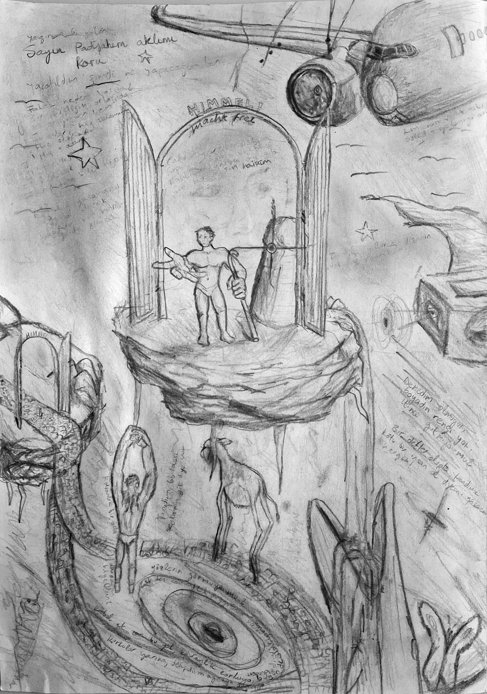

Yusuf Sinan Torun
Ich orientiere mich beruflich neu und suche einen Partner für ein duales Studium oder ein Praktikum. Mein Blick reicht von Chemie und Konstruktion bis zu Mathematik und Gestaltung.


Arbeiten und Erfahrungen
Literaturarbeit
Sind Kunststoffe noch zeitgemäß?
Eine Facharbeit über Biokunststoffe, Recyclingverfahren und Kreislaufwirtschaft
Praxis - UmweltanalytikLaborpraktikum
Erfahrung im Umwelt- und Analytiklabor in Magdeburg
3D-Modellierung - technische ZeichnungenCAD
Rotor und Flugzeugflügel in SolidWorks
Erfahrung - 2023–2025Mathematik-Nachhilfe
Für die Klassen 5 bis 7
Kontakt
Ich freue mich über Kontakte zu dualen Studienmöglichkeiten, Praktika und Projekten an der Schnittstelle von Naturwissenschaft, Technik und Gestaltung.
E-Mail LinkedIn